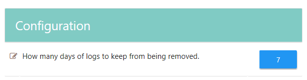

Symptoms
-
Insufficient space in the StealthAUDIT console drive.
-
StealthAUDIT FSAA logs consume a large portion of disk space. For additional information on StealthAUDIT logs, refer to the following article: StealthAUDIT Logs.
Cause
FSAA logs are not clearing up automatically.
Resolution
-
Download the Log Maintenance job group attached to the article, and add it to StealthAUDIT.
NOTE: It is recommended to add the job group to the Sandbox folder, if available.
-
Set the target host list for the job group to match the location of the FSAA logs to be cleared (e.g., either localhost or the FSAA proxies).
-
In the 1- LogCleanup job, configure the query to the FSAA location. If StealthAUDIT or proxies are using different paths, job query will need to be run separately against StealthAUDIT and proxies, modifying the query accordingly depending on host target.
-
Optional. In the 1-LogCleanup job homepage, configure the How many days of logs to keep from being removed setting. The default settings is 7 days.
